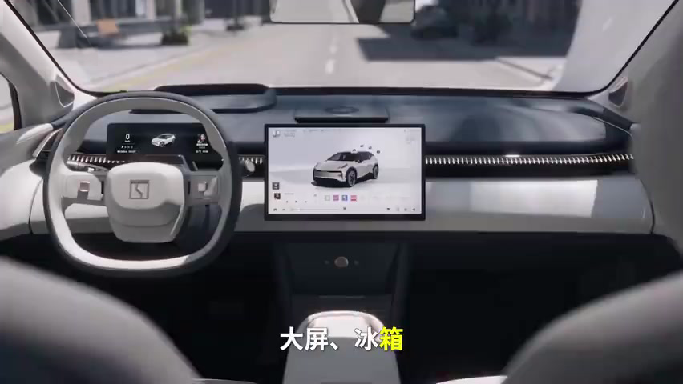
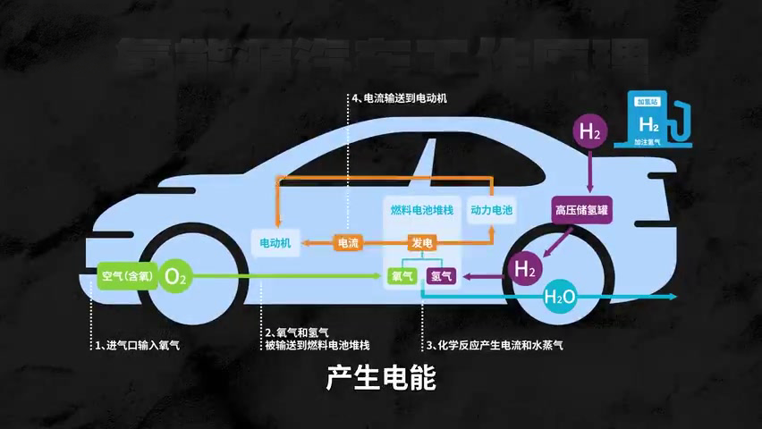
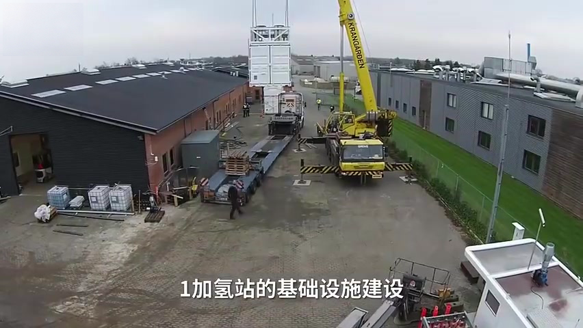

买电车，买的到底是什么？
“电动汽车不是未来？”“人人都开电车，真的能创造一个更清洁的地球吗？”2024年初，围绕电动汽车的争论又热了起来。特斯拉的季度销量波动、传统车企调整电动化计划，都被一些人当成了唱衰电车的理由。甚至有人说，电车是“低级产品”，压根不算新能源。
奔驰调整全面电动化的时间表，部分传统车企放慢纯电车型开发或扩产节奏。于是，一个问题来了：中国电车是不是点错了科技树？燃油、纯电、氢能，到底谁更便宜、更高效？传统车企是在竞争中暂时退让，还是看到了更远的未来？
要回答这些问题，我们先从消费者说起。把2023年的国内SUV市场和十年前放在一起看，变化很明显：国产品牌和新能源车型的存在感大幅增强，过去由合资燃油车占据的市场，出现了越来越多的新面孔。
消费者为什么选择国产电车？把购车动机拆开，可以从三个角度看：买国产，买配置，以及买电车。这三件事经常同时发生，但背后的理由并不完全一样。
先说国产。过去，一些消费者对国产车有偏见，并非毫无缘由。国产汽车工业起步较晚，在发动机、变速箱、底盘等领域，确实经历过购买技术、引进生产线和学习海外产品的阶段。原稿提到，奇瑞早期曾从福特引进发动机生产线，这也是那个阶段的一个缩影。
当时，一些国产品牌既缺少规模效应，又缺少品牌积累。价格要压低，成本就吃紧；品牌认知不足，有的企业便在外观上找“近亲”。陆风X7、众泰SR9，就是当年绕不开的话题。品牌调性全靠“千里认亲”，难免让人觉得：我成替身了。
后来，情况变了。国产车的品质、制造水平和供应链能力不断提高，消费者的看法也跟着变化。特斯拉在上海建设超级工厂，就从侧面说明，中国汽车产业的竞争力已经不能再用过去的印象衡量。
第二点，配置。国产电车很大程度上“香”在哪儿？大屏、冰箱、全景天窗、抬头显示、智能互联，这些能直接感知的功能，越来越多地出现在消费者买得起的车型上。

原视频里，作者提到自己看宝马X7的经历：即便预算到了百万元级别，某些舒适配置也未必默认给到。反过来，二三十万元的国产车，就可能提供液晶仪表、座椅按摩与加热、电吸门、空气悬架、辅助驾驶等功能。当然，不同车型、年款和配置版本不能混为一谈，但消费者对“同样的钱能买到什么”的感受，是很直接的。
以前是挤牙膏，国产电车一上来，恨不得把牙膏捏爆。2024年初，秦PLUS DM-i以7.98万元起售价吸引关注。银河E8则把约五米车身、45英寸大屏等卖点带入竞争；其中3.49秒的零百加速成绩对应高性能版本，不能和入门价格直接拼成一套配置。〔1〕
理想L9、问界M9，也把竞争目标指向了更高价位的豪华SUV。不是X7买不起，而是国产车的配置和价格，让消费者有了新的比较对象。
毕竟，大部分车主不是硬核玩家。底盘结构、悬架形式、轮胎参数，未必是他们最先关心的问题。很多人的优先级是品牌、空间、配置、功能、外观，最后再加上——价格，价格，还是价格。就像十几年前买iPhone，有多少人是冲着参数去的？不少人只是想玩《水果忍者》和《愤怒的小鸟》。
第三点，才是电车本身。过去，环保是推广电动汽车的重要理由。但对普通消费者来说，买车未必是为了一个宏大的环保目标。政策优惠、牌照便利、加速体验、使用成本，往往更能影响决定。
有人看中补贴和免税，有人需要牌照，有人喜欢电驱动的响应，也有人只是想尝试新潮流。再现实一点，是充电通常比加油便宜。具体能省多少，要看当地油电价格、充电方式和实际能耗，家充与高速服务区快充也不能一概而论。
到了2024年初，价格竞争又往前走了一步：前两年喊“油电同价”，后来喊“电比油低”。当购车成本也开始下降，消费者自然会重新算账。买了电车的朋友也可以想一想：当初真正打动自己的，到底是哪一点？
还有一种常见说法：“开电车的人不懂车。”那什么才叫懂车？开日系的看重省油、耐用、保值；开德系的看重高速稳定性；开宝马的讲操控，开奔驰的讲舒适和体面；跑网约车的人，则更关心购车成本、能耗、空间和出勤效率。
所以，“懂车”很多时候只是各有各的需求。屁股坐在哪里，往往又是钱包决定的。只要一辆车能满足自己的使用场景，配置够用、成本合适，消费者自然会用钱包投票。
但这不意味着电车没有短板。低温续航衰减、长途补能、节假日充电排队，都是真问题。经常自驾远行、缺乏固定充电条件的人，也可能更适合燃油、插混或增程车型。不同场景，需要不同答案。
到2023年，新能源车在国内已经不再是小众选择。既然这条路线得到了越来越多消费者的认可，为什么传统车企还会调整计划？接下来，我们就把“更环保”和“更经济”这两笔账拆开算。
电车是新能源吗？
原视频展示了1943年巴塞罗那电动出租车更换电池的画面：操作员借助起重设备，把车身前部的大电池拆下来。没错，是换电。今天蔚来、飞凡等品牌采用的换电思路，并不是从零开始的新发明。
电动汽车本身就更不新鲜了。早在十九世纪，人们就已经开始探索电驱动汽车；到二十世纪初，电车曾与蒸汽汽车、汽油车同场竞争。哥伦比亚等厂商生产的电动车，也曾是当时市场上的重要产品。〔2〕
那为什么早期电车没能一直走下去？电池是重要原因。铅酸电池笨重，能量密度低，续航能力有限。消费者希望汽车带自己去更远的地方，电车却把“诗和远方”限制在一小段距离内。
不过，电池并不是唯一原因。汽油车的大规模生产降低了价格，电启动装置改善了使用便利性，加油与道路条件也在变化。几股力量叠加，市场逐渐向燃油车倾斜。〔2〕
后来，电车为什么又被反复提起？石油危机让人们重新思考能源依赖，节能和减少污染的需求也推动着研发。1972年慕尼黑奥运会期间，宝马就使用过1602电动试验车。当时的铅酸电池续航有限，更适合承担赛事保障等特定任务。〔3〕
对已经建立起燃油车生产体系的企业而言，另起炉灶并不轻松。但油价上涨和能源安全压力，又让它们不得不做两件事：一边继续提高内燃机效率，一边寻找替代路线。
宝马的探索并没有停止。1987年至1990年间，它以325iX为基础开展电动车试验；1991年，推出纯电概念车E1；2007年，又启动了Project i。奔驰也长期探索混合动力与纯电产品。传统车企并非从未认真考虑过电动化。〔3〕
真正的转折，在于电池技术什么时候能把性能、续航和成本推过商业化门槛。早期的tzero电动跑车，就展示过锂电池带来的潜力：电车也可以有较长续航和强劲加速。此后的特斯拉，把电动汽车进一步带入了大众视野。
2019年，诺贝尔化学奖授予约翰·古迪纳夫、斯坦利·惠廷厄姆和吉野彰三人，表彰他们对锂离子电池发展的贡献。这项成果跨越了数十年的研究与改进。可以说，锂离子电池的发展，是现代电动汽车得以普及的重要基础。〔4〕
但问题还没完：既然电车一百多年前就有，为什么今天又叫“新能源汽车”？这里得把汽车分类和能源分类分开。电动车的技术历史悠久，并不妨碍它被纳入今天的新能源汽车范畴；而“电”本身，也不是一种能简单用“新”或“旧”划分的初级能源。
电是一种二次能源，也是一种能源载体。煤炭、天然气、水力、风能、太阳能，都可以用来发电。Ember发布的《2023年全球电力评论》显示，2022年全球发电量中，化石燃料约占61%，风电和太阳能合计约占12%。这组数据反映的是当时的电力结构。〔5〕
所以，讨论电车是否清洁，不能只盯着车尾有没有排气管，还要追问电从哪里来。同样一辆电车，用不同地区的电，背后的碳排放可能很不一样。
燃油车和电车，到底谁更环保？先看使用环节。电驱动系统效率较高，而且发电可以利用多种能源。随着低碳电力占比提高，电车的使用阶段排放还可能继续下降。不过，具体减排多少，不能把某个地区、某种车型的测算直接套到所有车辆上。
再看全生命周期：造车、造电池、生产燃料或电力、车辆使用，直到报废处理，都要纳入比较。电池生产确实带来额外排放，但这不等于电车在整个使用寿命里一定排放更多。还得看电网结构、电池大小、车辆能耗和总行驶里程。
这里需要校正原稿的一处结论。原视频由一项生命周期研究推导出“中国多数纯电车型排放高于燃油车”，继而说“电车卖得越多，排放越大”。这样的概括超出了特定研究条件，不能作为普遍结论。
作为补充核查，IEA在原视频发布后的《2024年全球电动汽车展望》中测算：在既定政策情景下，按全球平均水平，2023年售出的中型纯电车，在约15年、20万公里的生命周期内，温室气体排放约为同类燃油车的一半。这不是所有地区、所有车型都减半，而是特定假设下的比较结果。〔6〕
把生产和使用分开，逻辑就更清楚了：电车制造阶段，尤其是电池生产，可能承担较高排放；进入使用阶段后，又可能通过更高效率和较低碳电力把这部分差额补回来。能补回多少、需要跑多远，要具体计算。
经济性也一样。购车价格、能耗、保养、保险、折旧，都要一起看。不能只拿一次充电的钱和一箱油的钱比较，也不能只盯着新车售价。技术进步与规模效应有助于降低成本，但原材料价格和市场竞争也会影响结果。
因此，电动化的发展空间，来自电池、制造、电网和补能设施的共同进步。它并不是一张“只要叫新能源就天然正确”的免检证书；同样，也不能因为某些环节仍有排放，就认定这条路线毫无意义。
回到奔驰：调整全面电动化的时间表，能不能说明它不认可电车？不能。奔驰早期对2030年转向纯电的表述，本来就带有“在市场条件允许的地方”这一前提。后来调整节奏，也不等于停止开发电动汽车。〔7〕
奔驰EQC、奥迪e-tron、宝马i系列，都说明传统豪华品牌早已投入电动化。它们在平台、产品定位、软件体验和成本上的表现，各有差异。市场反馈不如预期，可以说明转型遇到了困难，却不能直接证明企业已经放弃这条路线。
2023年7月，大众与小鹏宣布技术合作。按当时公布的协议，大众拟投资约7亿美元，取得约4.99%的股份，并合作开发面向中国市场的大众品牌电动车。这样的动作，显然不是“不想做电车”。〔8〕
所以，得分清三件事：放弃电动汽车、放慢转型节奏，以及调整一个原本就有条件的目标。这三件事，差得很远。就像一个人说要赚一个亿，后来发现时间表太激进，改了目标，并不意味着他从此不赚钱了。
比起把目标调整当成路线判决，我们更值得关注的是：在电车继续进化的过程中，会不会出现另一种能源方案，改变现有竞争格局？比如氢能。
谁才是版本答案？
日本车企对氢燃料电池投入很大，但也不能把它们概括成“只押氢能、全面唱衰电车”。混动、纯电和燃料电池，本来就可以同时布局。真正的问题是：氢燃料电池车有哪些优势，又为什么迟迟没有在乘用车市场大规模普及？
先看原理。氢燃料电池车同样用电机驱动车轮，只是电能主要来自车上的燃料电池：氢气与氧气发生电化学反应，产生电能，反应产物是水。从这个角度看，它可以理解为一辆带着“氢能发电装置”的电动车。〔9〕

那它环保吗？问题又回到了源头：氢从哪里来？如果制氢过程排放很高，车端只排水，也不等于全生命周期没有碳排放。
常见的颜色叫法里，灰氢通常指用化石燃料制取、没有配套碳捕集的氢；蓝氢则是在化石燃料制氢过程中配套碳捕集与封存等技术；绿氢通常指用可再生电力电解水制取的氢。核电制氢可以属于低碳制氢路线，但不宜直接混入绿氢的通常定义。原稿把蓝氢简单说成天然气重整、把绿氢转写成“沥青”，都需要纠正。〔10〕
不过，颜色只是便于交流的简写。真要比较排放，还得看能源来源、甲烷泄漏、碳捕集效果和运输方式。氢与电一样，都可以成为能源的载体，是否低碳要看生产和使用的全过程。〔10〕
氢确实有优势：按单位质量计算，它的能量含量很高。但按体积计算，常温常压下的氢气能量密度很低，需要高压储存或其他储氢方式。再把储氢罐、燃料电池和辅助系统算进去，就不能直接得出“氢车效能比固态电池高”的结论。比较材料和比较整套系统，是两回事。〔11〕
因此，发展氢能有它的技术价值，却不等于氢燃料电池车在所有场景里都更合适。补能时间、续航需求、载荷、路线是否固定，以及能否稳定获得低成本氢气，都会影响它的竞争力。
为什么普及困难？首先是成本，其次是储运、补能和安全工程的要求。氢气易燃，需要可靠的泄漏检测、通风和储存设计；但不能因此简单说“氢能源车不安全”。关键是能否把风险通过设计、检测和规范控制好。〔12〕
另一个现实问题是：它面对的电车对手，已经迭代了很多轮。丰田MIRAI和现代NEXO都证明，氢燃料电池乘用车可以做出来，也能提供实际的续航与补能体验。现代公布的NEXO中国版续航为CLTC-P工况下550公里，加氢约需5分钟；实际使用仍受工况与加氢条件影响。〔9〕
但“能做出来”和“普通人愿意买”之间，还有价格、配套设施和使用成本的距离。你可以把早期氢燃料电池车比作十年前的Model S，可它面对的竞争对手，已经是迭代数轮的Model Y，以及海鸥等覆盖不同价位的电动车了。
为什么成本难降？燃料电池系统与高压储氢系统，本身就有较高的技术和制造要求。部分燃料电池使用铂等催化材料，储氢罐也需要满足严格的性能要求。与此同时，产业规模还小，供应链难以像成熟电动车那样摊薄成本。
配套设施也是一道门槛。符合安装条件的电动车用户，可以在自家车位补能；氢燃料电池车则需要依赖专门的加氢设施。建站之外，还要解决氢的生产、运输、储存和供应问题。车少，站难赚钱；站少，消费者又不愿买车。

用氢成本同样不能忽略。原稿给出了每公里约五角钱的个案，但没有交代清楚氢价、测试条件与补贴口径，不适合据此判断所有氢车都比油车省、比电车贵。比较时，应统一能源价格和实际能耗的条件。
再往深一层看，传统车企还有转型动力的问题。既有产品和供应链能够带来收入，切换技术路线就意味着新投入与不确定性。柯达、诺基亚的故事常被拿来作类比，但类比只能提醒风险，不能替任何一家车企预先写好结局。
最后，技术路线的胜负，从来不只由实验室里的一个参数决定。就像计算机的二进制与三进制之争，技术可行性是一回事，产业能不能形成标准、配套和规模，又是另一回事。哪条路线有更多企业投入、更多消费者使用，就更有机会持续改进。
汽车也在经历这样的变化。电池、电驱、软件、智能座舱和联网服务，正在共同影响产品竞争力。这里不宜简单说“欧洲没有互联网”或“日本互联网消亡”，更不能把中国经济总量超过日本归因于发展电车。真正值得比较的，是各地具体的产业能力和企业表现。
出海还会带来数据安全、市场准入和贸易政策等问题。原视频用“让数百万辆汽车同时熄火”的说法讽刺海外舆论，但这类担忧不是已经发生的技术事实。讨论时，需要把假设、政策争论和能够验证的风险分开。
中国新能源车的一个重要优势，是逐渐形成的产业规模与供应链配套。更多车型进入市场，带来更激烈的竞争，也推动企业改善产品和控制成本。但销量好，并不自动等于每款车都安全、环保，产品质量仍要一项项检验。
在国内，新能源车改变了自主品牌与合资品牌的竞争格局；在海外，中国车企也在寻找新的市场。不过，出海能否成功，还要过品牌、渠道、售后、法规和本地化这些关。把车运出去，只是第一步。
所以，判断中国电车有没有点错科技树，不能只看几条唱衰新闻，也不能只看几句自我肯定。看看真实的产品，算算完整的成本，再看不同技术能满足什么需求，比先站队更有用。
回到最开始的问题：你买车时最看重什么？价格、空间、配置、续航、补能，还是品牌？原视频最后邀请观众参与汽车消费调查，希望进一步了解不同群体的选择。这个问题也值得每个准备买车的人先回答一遍：自己究竟需要一辆什么样的车？